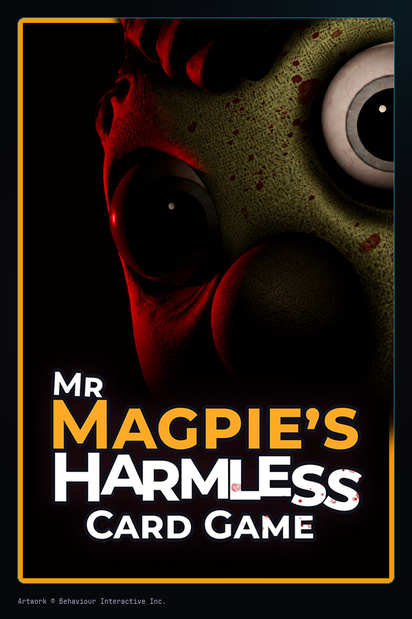

Home › Blog › Mr Magpie's Harmless Card Game
Blog · NewsMr Magpie's Harmless Card Game: un card game di Behaviour Interactive

Artwork © Behaviour Interactive Inc.
· Redazione BENDREX
Mr Magpie's Harmless Card Game ha una data: 18 febbraio 2027. L'annuncio è arrivato il 20 novembre 2026 agli Horror Game Awards, ed è la notizia: fino a quel giorno la finestra era «inizio 2027». Il gioco è un deckbuilder horror surreale-aziendale di Giant Light Studios, pubblicato da Behaviour Interactive, la casa di Dead by Daylight. Uscirà su PC, PS5, Xbox Series X|S e Switch 2, e su Steam c'è già una demo gratuita.
Data di uscita: 18 febbraio 2027 su PC, PS5 e Xbox
Su Steam la scheda indica il 18 febbraio 2027 e il solo Windows; chi cerca «harmless card game steam» trova lì requisiti e lingue, ma non un prezzo, che non è stato annunciato su nessuno store. Da ottobre 2026 c'è anche una demo gratuita scaricabile, con gli stessi requisiti minimi del gioco. Le versioni console sono state aggiunte il 20 ottobre 2026, quando il gioco era atteso genericamente a inizio 2027; la data del 20 novembre vale per il lancio, non per una singola piattaforma. PlayStation Store ha solo la pagina concept, con uscita «2/2027», nessuna piattaforma elencata e nessun prodotto collegato: per PS5 non esiste una data al giorno. Xbox non pubblica alcuna data, mentre Microsoft Store lo elenca come ottimizzato per Series X|S. Switch 2 è stata annunciata insieme alle altre versioni, ma senza scheda eShop e senza data Nintendo: sullo store della console il gioco oggi non c'è.
Cosa sappiamo del gioco, e cosa manca
La copy ufficiale lo descrive come surreale e aziendale, ambientato in un ufficio dove un pupazzo, Mr. Magpie, gestisce le prestazioni dei dipendenti. Si gioca in single player: si girano carte per guadagnare denaro e moltiplicatori, gli indizi servono a capire dove si nascondono le carte JERRY, e si decide quando incassare prima che la mano crolli. Tra una corsa e l'altra si investe in magazzino, per aggiungere carte e talenti.
I requisiti minimi su Steam sono leggeri: Windows 10 21H1 o successivo, processore x64 o ARM64, GPU con DirectX 10-12 o Vulkan e 400 MB di spazio; i consigliati non sono dichiarati. Le lingue sono nove e l'italiano non c'è. Microsoft Store indica PEGI 16 con «violenza accentuata». Matt Mercer è la voce di Mr Magpie, come conferma un annuncio dello studio, e il trailer cita Sunbright Pharmaceuticals, l'azienda dove si svolge il gioco. Cosa manca: prezzo, durata di una corsa e requisiti console.
L'editore: Behaviour Interactive
Behaviour Interactive Inc. è un editore e sviluppatore canadese con sede a Montreal, noto per Dead by Daylight. A sviluppare è Giant Light Studios, che firma il gioco. Su Steam compare anche Gambit Digital come secondo publisher, con un ruolo non dichiarato; la scheda PlayStation riporta Behaviour Interactive come editore, quindi il ruolo è verificabile su due store. Per il mr magpie card game il quadro è quindi quello di uno studio piccolo con un editore strutturato alle spalle, e di un lancio annunciato durante una serata di premi. Il titolo non si traduce: resta Mr Magpie's Harmless Card Game anche nelle schede italiane.
Chi vuole farsi un'idea ha una strada gratuita: la demo su Steam, pubblicata il 5 ottobre 2026. Il resto arriverà nei prossimi mesi: prezzo, requisiti console e la scheda eShop per Switch 2. Il lancio resta fissato al 18 febbraio 2027. Chi vuole seguire gli aggiornamenti può partire dalla scheda Steam, che per ora resta l'unica completa. Quando arriveranno gli altri dati aggiorneremo questa pagina; questi sono i fatti confermati oggi.